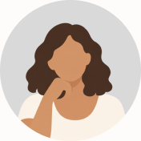
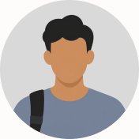
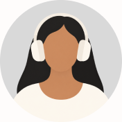
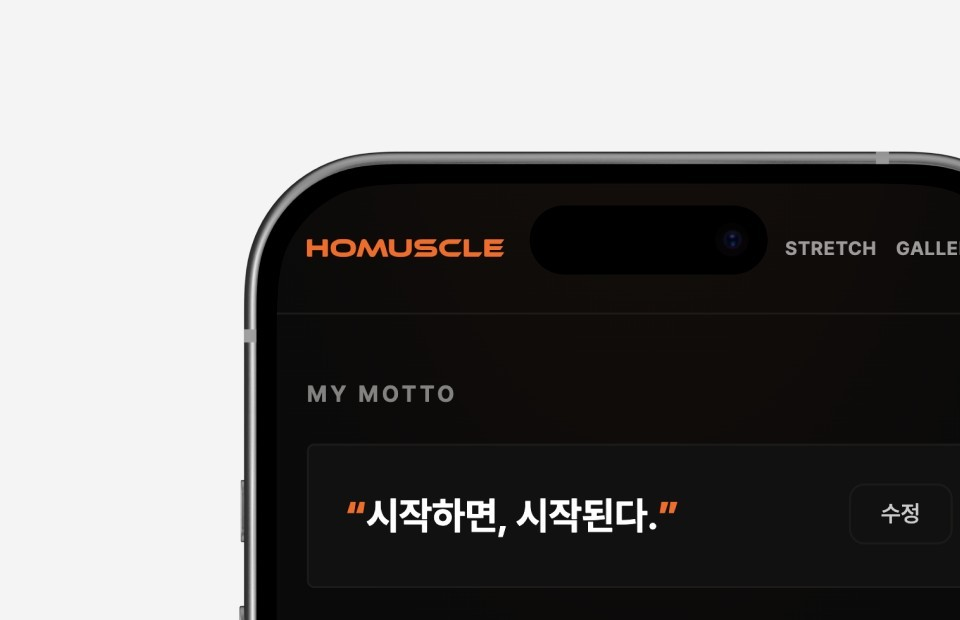
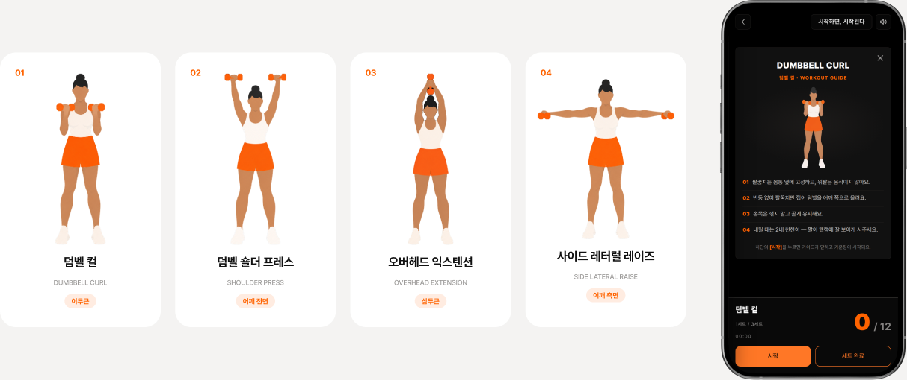
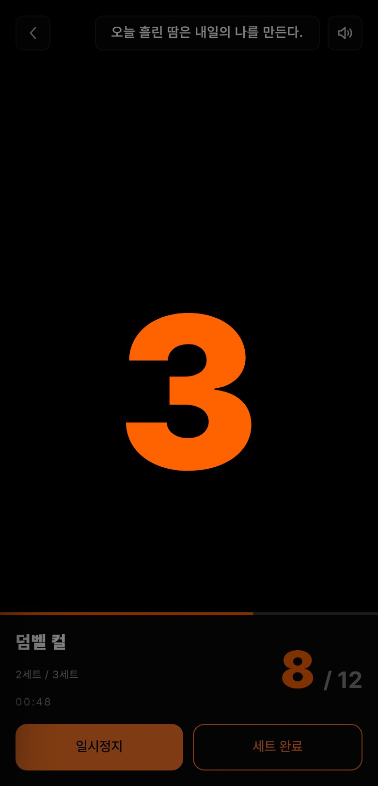
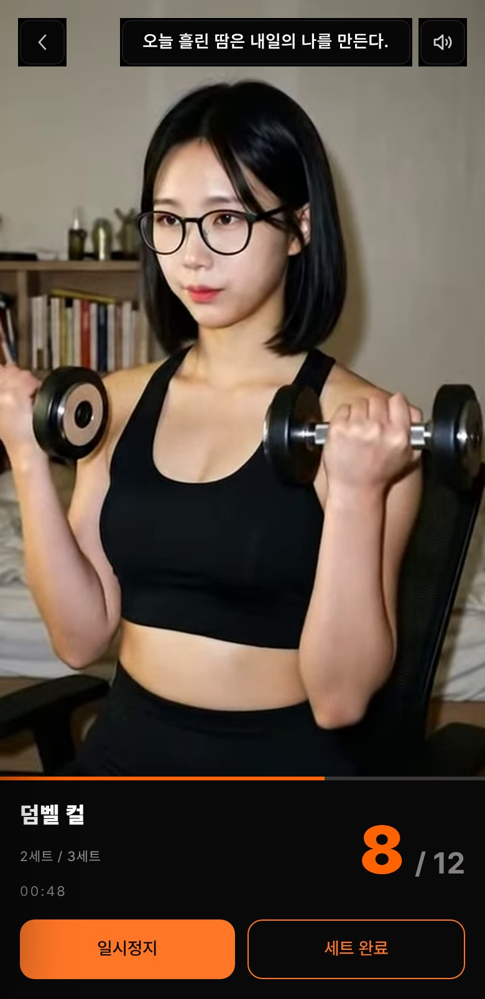
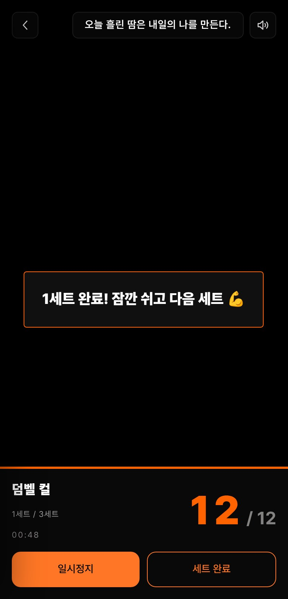
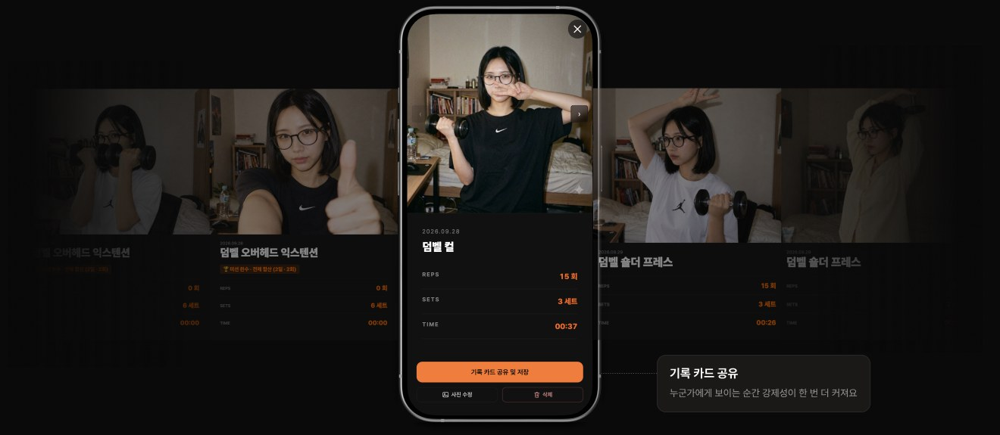
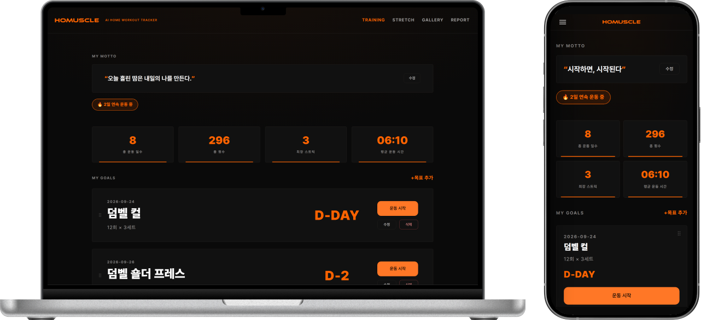

클릭으로 확대 · 다시 클릭으로 축소 · ESC로 닫기
Personal Work · Jul 2026 · UX Research & Product Design
Overview
따로 횟수를 세는 것도 귀찮고 기록도 따로 남기지 않다 보니, 금방 지루해지고 이어갈 이유가 사라져요.
직접 겪은 이러한 문제들을 해결하고자 HOMUSCLE을 만들게 되었어요.
HOMUSCLE은 카메라가 운동 횟수를 자동으로 세고,
달력·사진·기록으로 남아 다시 운동하게 만드는 홈트레이닝 웹앱이에요.
Desk Research
운동 정보는 이미 넘쳐나요. 그래서 많은 사람이 혼자서도 할 수 있다고 믿어요.
근데 혼자 하면 결국 의지 하나로 버텨야 해요.
운동이 습관이 되기까지, 대부분은 그 전에 헬스 앱을 그만둬요.
Q. 새 습관이 자동으로 되기까지 걸리는 시간은?
Singh et al., 2024 · Healthcare (메타분석, 2,601명)
Q. 헬스·피트니스 앱, 한 달 뒤에도 쓰고 있을까?
Business of Apps (2026)
30일 뒤 남는 사용자
건강 앱을 그만두는 이유는 크게 여섯 가지로 나뉘고, 자기 활동을 기록했을 때 효과가 더 좋았어요.
HOMUSCLE도 집에서 카메라를 켜고 자발적으로 운동하는 서비스라,
입력의 번거로움과 달라지는 목표는 반드시 풀어야 할 문제였어요.
Q. 사람들은 왜 건강 앱을 그만둘까?
Kidman et al., 2024 · JMIR (스코핑 리뷰)
기록을 돌아보게 될 때 더 움직여요
Conroy et al., 2023 · Health Psychology
Desk Research Insight
“방법은 알지만 의지만으로는 두 달을 버티기 어려워요.
입력 없이 남는 기록이 필요해요.”
습관이 자리잡는 데 걸리는 두 달, 그 전에 결심이 먼저 흐려지고 앱은 지워져요.
기록은 다시 운동하게 만들지만, 직접 입력해야 하는 순간 또 하나의 숙제가 돼요.
그래서 필요한 건 더 많은 정보가 아니라, 운동만 하면 흔적이 저절로 남는 장치예요.
Competitive Analysis
국내 주요 홈트 서비스를 분석한 결과, 루틴 추천과 자세 교정 등 '무엇을 어떻게 할지'는 촘촘하게 채워져 있었어요.
하지만 지속 장치는 커뮤니티의 응원이나 포인트 보상처럼 대부분 외부 보상에 기대는 방식이었어요.
| 구분 | HOMUSCLE | 플랜핏 | 엑서사이트 | 콰트 |
|---|---|---|---|---|
| 핵심 질문 | 정말 할지 | 무엇을 할지 | 어떻게 할지 | 무엇을 볼지 |
| 핵심 기능 | 카운팅 → 기록 자동 저장 | 루틴 추천·음성 코칭 | AI 자세 분석·카운팅 | 영상 클래스·식단 코칭 |
| 지속 장치 | 나만의 기록과 인증 | 커뮤니티·응원 | 포인트 적립 | 포인트·스토어 |
| 이용 방식 | 설치 없는 웹 | 앱 설치 | 앱 설치·TV | 앱 설치·워치 |
User Research
집에 운동기구가 있는 20~30대 32명에게 설문을, 그중 3명에게 인터뷰를 진행했어요.
표본이 작아 비율보다 방향을 보는 용도로 읽었어요.
Survey
Q1. 집에 덤벨 등 운동기구가 있나요?
Q2. 지난 일주일 동안 집에서 운동한 날은?
주 2일 이하 79%
Q3. 운동을 안 한 날, 가장 큰 이유는?
Q4. 운동한 횟수·세트를 기록하나요?
Q5. 누가 세주거나 기록이 남으면 더 할 것 같나요?
Q6. 영상이 저장·전송되지 않는다면 운동 중 카메라를 켤 수 있나요?
설문 기간 2026.07.01 ~ 07.07 · 응답 24~39세 남녀 32명(설문) & 3명(인터뷰)
In-depth Interview

헬스장을 끊고 덤벨을 산 직장인
"헬스장 한 달 끊어놓고 세 번 갔어요. 그래서 덤벨을 샀는데, 퇴근하면 '내일 하지'가 되더라고요. 집에선 아무도 안 보니까 안 해도 티가 안 나요."
퇴근 후 반복되는 '내일 하지'

유튜브 홈트를 따라 하다 멈춘 사람
"유튜브 루틴 따라 하는 건 어렵지 않아요. 근데 끝나고 나면 아무것도 안 남으니까, 지난주에 몇 번 했는지도 모르겠고 점점 흐지부지돼요."
해도 남는 게 없어 흐지부지

운동 기록 앱을 써봤다 지운 사람
"기록 앱을 깔았는데 세트마다 폰 들고 숫자 입력하는 게 귀찮아서 지웠어요. 운동하러 들어갔다가 입력만 하다 끝나는 느낌?"
기록은 또 하나의 숙제
User Research & Interview Insight
“기록은 귀찮지만,
오늘 한 운동은 흔적으로 남기고 싶어요.”
응답자의 81%는 집에 운동기구가 있지만, 79%는 지난주에 운동한 날이 이틀 이하였어요.
운동을 안 한 이유는 방법이 아니라 '미루다 보니'(53%)였고, 기록을 남기는 사람은 9%뿐이었어요.
하지만 78%는 누가 세어주거나 기록이 남으면 더 할 것 같다고 답했어요.
그래서 기록을 사용자의 일에서 빼고, 운동만 하면 흔적이 남게 만드는 것이 필요하다고 봤어요.
Project Goal
입력 없이 남는 기록으로, 홈트에 강제성을 만들어
오늘 한 세트가 내일로 이어지도록 돕는 서비스
남에게 보여주거나 보상을 받지 않아도,
내가 남긴 기록이 눈에 보이면 그것이 다음 운동을 시작할 이유가 된다고 봤어요.
목표 하나, 버튼 하나로
고민 없이 바로 시작
혼자여도 카메라가 세어주는
한 개 더의 힘
인증샷·달력·스트릭으로
매일의 흔적 남기기
지난 기간과 비교하는 리포트로
쌓인 변화 확인하기
🔒 모든 영상은 기기 안에서만 처리되고, 서버로 보내지 않아요.
User Journey
Information Architecture
PC에서는 상단 메뉴, 모바일에서는 왼쪽 드로워로 이동해요.
Design System
HOMUSCLE의 시각 언어와 UI 규칙을 하나의 기준으로 모았어요.
색·타이포·간격 같은 토큰부터 버튼 같은 컴포넌트, 화면에서 조합되는 방식까지 다뤄요.
사이트 자체도 토큰만으로 만들었어요.
피그마 변수를 CSS 변수로 옮기는 작업은 AI 코딩 도구와 함께했고,
어떤 값을 어떤 이름으로 나눌지는 직접 정했어요.
토큰 참조 100%homuscle.vercel.app/homuscle-ds-site.html ↗

집에서 키우는 근육이라는 뜻으로,
'HOME'과 'MUSCLE'을 한 단어로 붙여 이름을 지었어요.
PRIMITIVE — 36
SEMANTIC — 37 Button 23 · Text 6 · Elevation 5 · Border 3
--mono-990: #0a0a0a
--primary-400: #ff7726
--red-300: #e08a8a
--bg: var(--mono-990)
--btn-primary-bg: var(--primary-400)
--btn-quaternary-text: var(--red-300)
TYPOGRAPHY — PRETENDARD
BUTTON — Primary · Secondary · Tertiary · Quaternary
size 48 / 40 / 32 · state default · hover · dim · loading
Key Features
아래 화면 중 테두리가 있는 화면은 캡처가 아니라 실제 앱을 그대로 임베드한 것이에요.
직접 눌러보거나 목표를 추가해볼 수 있어요.
01 · Home
홈 화면에 나의 모토와 오늘의 목표가 가장 먼저 보여요.
뭘 할지 고민할 틈 없이 바로 시작할 수 있어요.
MY MOTTO
스스로 정한 한 문장이 매번 다짐을 대신해요
연속 운동 배지
이어 온 날이 보이면 오늘 끊기가 아까워져요
누적 통계
총 운동 일수·횟수·최장 스트릭·평균 시간을 한눈에 볼 수 있어요
MY GOALS
종목·목표 횟수·D-DAY를 설정하고, 운동 시작 버튼은 Primary 색상으로 강조했어요
02 · Creating Goals
종목, 횟수와 세트, 날짜만 고르면 끝.
긴 온보딩이나 루틴 설정 없이 목표 카드 한 장이 오늘의 운동 일정이 돼요.
목표 목록에서 목표 추가 클릭
종목·횟수·세트·날짜만 선택하면 끝
등록한 운동은 내 목표에 바로 추가
운동 종류 선택
덤벨 운동 4종이 입력 화면에서 바로 보여서 고르기만 하면 돼요
날짜 설정은 과거까지
어제 못 한 운동을 오늘 채우는 경우도 있어서 열어뒀어요
03 · Stretching
책상 앞에 오래 앉아 있다가 바로 운동을 시작하는 경우가 많아서,
덤벨 운동에 많이 쓰는 목·어깨를 먼저 푸는 스트레칭 네 동작을 따로 만들었어요.
동작마다 시간이 정해져 있고, 카운트다운이 끝나면 다음 동작으로 넘어가요.
01 / 0430초
목 옆으로 기울이기
귀를 어깨에 붙인다는 느낌으로 좌우 15초씩
02 / 0420초
목 앞뒤로 숙이기
턱을 당겼다가 편한 범위까지 반동 없이 부드럽게
03 / 0425초
어깨 으쓱 돌리기
어깨를 올렸다가 뒤로 크게 돌려 굽은 어깨를 펴줘요
04 / 0430초
크로스 바디 어깨 스트레칭
팔을 가슴 앞으로 가로질러 반대 손으로 지그시
04 · Exercises
목표를 만들 때 고를 수 있는 종목은 네 가지예요.
팔 앞·뒤와 어깨 앞·옆을 고르게 쓰도록 골랐고, 종목마다 반복을 세는 관절 각도 기준이 따로 있어요.

05 · Auto Counting
카메라 앞에 서면 3초 카운트다운 후 횟수가 자동으로 올라가요.
목표까지 남은 개수가 보여서, 한 개 더 하게 돼요.
3초 카운트다운
카메라가 자동으로 카운팅
세트 사이 짧은 휴식



Motion Tracking — 동작을 인식하고 자동으로 카운트해요.
아래는 실제 촬영 영상에 포즈 인식 결과를 그대로 입힌 화면이에요.
자세 인식은 기기 안에서 끝나고, 영상은 밖으로 나가지 않아요.
실제 촬영 영상을 MediaPipe Pose로 분석해 어깨·팔꿈치·손목 좌표와 팔꿈치 각도를 뽑고, 그 위에 스켈레톤·각도·아령 인식 박스를 그렸어요.
덤벨 컬 기준으로 아래 상태머신의 임계값(80°/110°)을 그대로 적용한 결과예요.
> 110°< 80°300ms06 · Calendar & Gallery
운동한 날은 달력에 표시되고, 인증샷은 갤러리에 모여요.
비어 있는 날이 보이는 것만으로 다시 올 이유가 돼요.
운동한 날 표시
운동한 날은 주황 표시로, 인증샷이 있는 날은 썸네일로 보여줘요
갤러리 · 백업
기록을 목록으로 모아 보고, 기기를 바꿔도 내보내기·가져오기로 옮겨요
카드 이미지 저장
그날의 사진과 기록을 한 장의 카드로 저장·공유해요
기록 상세 — '카드 이미지 저장'을 누르면 그날의 사진과 기록(횟수·세트·시간)이 한 장의 이미지로 내보내져요
07 · Proof of Workout
목표를 채우면 완료 화면과 함께 인증샷을 찍을 수 있어요. 사진은 기록에 붙어 달력과 갤러리에 쌓여요.
기록 카드를 공유하면, 누군가에게 보이는 순간 강제성이 한 번 더 커져요.

08 · Report
이번 주와 이번 달의 운동을 지난 기간과 비교해 보여줘요.
절댓값보다 변화가 먼저 보이게!
변화를 먼저
절댓값보다 지난 기간 대비 증감이 먼저 보이게 했어요
한 줄 신호
연속 일수 → 증가 → 첫 기록 순으로 가장 말할 거리 하나만 골라요
요일별 · 종목별
어느 날, 어떤 운동을 했는지 차트로 확인해요
주간 · 월간
기간을 바꿔 쌓인 흐름을 비교해요
09 · Anywhere
설치 없는 웹앱이라 집에서 다른 일을 하다가도 브라우저만 열어서 짬짬이 할 수 있어요.
홈트는 마음먹은 순간과 실제로 시작하는 순간 사이가 짧을수록 이어져요.
반응형으로 PC와 모바일 상관없이 상황에 맞는 기기로 이용할 수 있어요.

Edge Cases
카메라 인식은 조명·각도·옷 색에 따라 흔들려요.
자동이 실패해도 운동이 멈추지 않도록 세 가지를 뒀어요.
사람이 안 잡힐 때
카운터가 멈추고, 전신이 보이게 서 달라는 가이드를 띄워요
멈춘 숫자부터 이어서 세기
숫자가 틀렸을 때
카운터를 눌러 직접 올리고 내릴 수 있어요
직접 고쳐도 세트 기록은 유지
카메라를 못 쓸 때
카메라 없이 세트만 넘기는 모드로 바뀌어요
남는 기록의 모양은 똑같이
인식이 실패해도 "오늘 했다"는 기록은 남아요
Result
Project Goal에서 세운 지표를 그대로 확인했어요.
사용성 테스트 · 20~30대 5명 · 3일 사용 · 2026.08
5 / 5
첫 세션을 1분 안에 시작
4 / 5
3일 중 2일 이상 다시 돌아옴
0
운동 중 직접 입력한 횟수
Retrospective
☆잘한 점
✓검증한 것
가장 좋았던 점 — “입력 없이 기록이 남는 것”
!아쉬운 점
→다음 단계
다음 측정 지표 제안 · 주당 운동일 · 7일 안에 다시 온 비율
다른 케이스